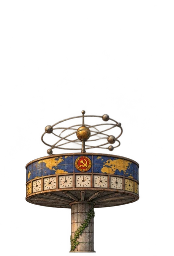
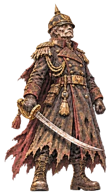
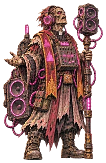
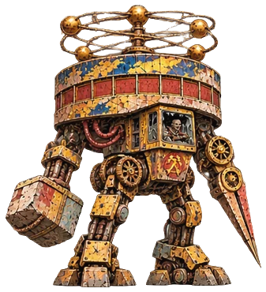

Die Weltzeituhr ist zerbrochen. Jeder Bezirk hängt in seiner eigenen Zeit fest, voller Zeitloser.
Du fährst die letzte U-Bahn. Nach jeder Welle wählst du einen Segen, Beute legst du im Inventar an.

Besiege den Endgegner, kämpf den Tunnel frei, fahr weiter.
4 Bezirke spielbar · 3 in Arbeit

Neon, Regen und Implantate. Der Bassprediger hält den Potsdamer Platz.

Die DDR lief weiter und verwilderte. Uhrwerke und Gärten statt Ruinen.